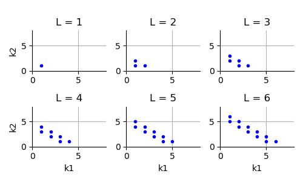

Note
Go to the end to download the full example code
Plot Smolyak multi-indices¶
The goal of this example is to plot the multi-indices used in Smolyak’s quadrature.
For a given dimension  and a given level
and a given level
 Smolyak’s quadrature is the combination of tensorized univariate quadratures.
These quadrature are defined by the set of multi-indices:
Smolyak’s quadrature is the combination of tensorized univariate quadratures.
These quadrature are defined by the set of multi-indices:
![\mathcal{S}_{\ell, d_x} = \left\{\|\boldsymbol{k}\|_1 \leq \ell
+ d_x - 1\right\}]()
where  is the 1-norm of the
multi-index
is the 1-norm of the
multi-index  .
.
The goal of this script is to plot the multi-indices involved in Smolyak’s
quadrature for different values of the level  in
dimension
in
dimension  .
.
import openturns as ot
import openturns.experimental as otexp
import openturns.viewer as otv
from matplotlib import pylab as plt
In the first example, we print the indices involved in
Smolyak-Legendre quadrature of level 3.
The multi-indices are computed using the
computeCombination() method.
Actually, the multi-indices do not actually depend on the
underlying univariate quadratures, but this is required for
the SmolyakExperiment class.
collection = [ot.GaussProductExperiment()] * 2
level = 3
print("level = ", level)
experiment = otexp.SmolyakExperiment(collection, level)
indices = experiment.computeCombination()
print(indices)
level = 3
[[2,1],[1,2],[3,1],[2,2],[1,3]]
We see that the multi-indices have a sum which is equal to either 3 or 4. In other words, these multi-indices belong to two different layers of constant 1-norms.
In order to see how this evolves depending on the level of the quadrature, the following function creates a 2D plot of the set of multi-indices.
def drawSmolyakIndices(level):
# Plot Smolyak indices of given level in 2 dimensions
collection = [ot.GaussProductExperiment()] * 2
experiment = otexp.SmolyakExperiment(collection, level)
indices = experiment.computeCombination()
sample = indices
graph = ot.Graph("L = %d" % (level), "k1", "k2", True)
cloud = ot.Cloud(sample)
cloud.setPointStyle("bullet")
graph.add(cloud)
return graph
In the following script, we create a grid of plots, where each graph corresponds to a given quadrature level. The bounding box of each graph is set to a constant value, so that all graphs have the same X and Y bounds.
levelMax = 8.0
boundingBox = ot.Interval([0.0] * 2, [levelMax] * 2)
nbrows = 2
nbcols = 3
grid = ot.GridLayout(nbrows, nbcols)
level = 1
for i in range(nbrows):
for j in range(nbcols):
graph = drawSmolyakIndices(level)
if i < nbrows - 1:
graph.setXTitle("")
if j > 0:
graph.setYTitle("")
graph.setBoundingBox(boundingBox)
grid.setGraph(i, j, graph)
level += 1
view = otv.View(grid, figure_kw={"figsize": (5.0, 3.0)})
plt.subplots_adjust(wspace=0.5, hspace=0.7)
plt.tight_layout()

We see that when the level increases, the set of Smolyak multi-indices correspond to two different layers of constant 1-norm. This is a consequence of Smolyak’s quadrature, which is based on tensorization of univariate difference quadratures.
plt.show()